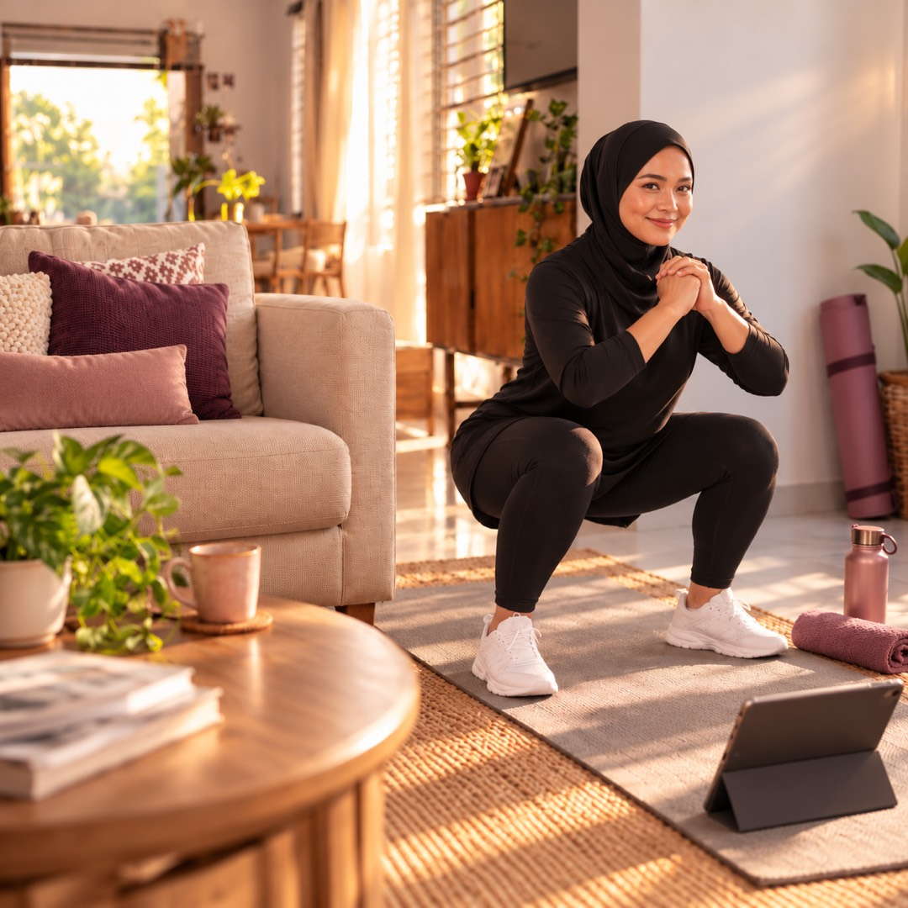

Di rumah, dalam privasi sendiriNak kurus, tapi sibuk urus kerja, rumah & keluarga?
Pelan 30 hari yang dibina ikut badan, masa dan cara anda makan. Dari rumah, 10 hingga 20 minit sehari, tanpa lompat.
Tengok program latihan dahulu ↓Dari gym sebenar.
Wanita sebenar, kelas HITFAT
Swipe →Peserta kelas HITFAT, bukan pengguna MAK2FIT 30. Keputusan setiap orang berbeza. Lihat semua testimoni ↓
BSc Sport Science, UiTM
Penat asyik plan nak start, tapi…
Dah cakap "Isnin ni aku nak start". Dah simpan video workout. Dah beli baju sukan. Tapi bila Isnin tiba, ada saja yang menghalang.
Bukan sebab anda malas. Anda tak perlukan lebih motivasi. Anda perlukan pelan yang cukup mudah, walaupun pada hari paling sibuk.
Muat dalam hari anda yang sibuk.
Satu program. Semua yang anda perlu.
MAK2FIT 30 ialah program 30 hari untuk wanita: latihan, pemakanan dan semakan kemajuan, dibina ikut jawapan anda dan diikuti dalam app HITFAT+.
Program latihan 30 hari22 sesi latihan, 6 hari regangan, 2 fit test. 10 hingga 19 minit, tanpa lompat.
Video setiap gerakanSuara yang mengira, pemasa dan muzik. Buat sekali gus atau 2 × 10 minit.
Menu Malaysia ikut andaSasaran kalori anda, 64 hidangan bergambar, nasi disukat ikut genggam.
Senarai semak harianWorkout, langkah, air dan satu misi pemakanan. Kecil, tapi jelas.
Check-in Hari 1, 15 & 30Berat, pinggang, pinggul, gambar dan fit test. Nampak sendiri perubahan anda.
Nutrition Academy28 video pendek dalam Bahasa Melayu, dengan kuiz.
10 scan makanan AISnap pinggan, dapat kalori dan makro dalam beberapa saat.
Senarai belanja mingguanIkut menu anda, tanda bila dah beli, hantar ke WhatsApp.
Bukan pelan sama untuk semua.
Ada yang baru mula, ada yang lutut sakit, ada yang baru bersalin. Ada yang makan 3 kali sehari, ada yang 5. Sebab itu pelan anda ikut jawapan anda.
Lihat apa yang disesuaikan untuk anda
Workout anda ikut…
- Tahap anda: baru mula, kadang-kadang, atau aktif
- Lutut, belakang atau pergelangan tangan yang sakit: gerakannya ditukar
- Baru bersalin: tiada crunch atau sit-up (selepas doktor benarkan)
- Masa anda: 10, 15 atau 20 minit sehari
- Bahagian yang anda mahu ubah: perut, punggung atau postur
Menu anda ikut…
- Berapa kali anda makan: 3, 4, 5 atau 6 kali sehari
- Makanan yang anda tak makan: ikan, udang, daging, santan, pedas, susu, telur atau kacang
- Sasaran kalori anda, dan nasi disukat setiap waktu makan
- Masak sendiri, untuk keluarga, atau kebanyakannya beli
Pelan anda dibina oleh app HITFAT+ secara automatik daripada jawapan anda. Ubah jawapan bila-bila masa, dan pelan dibina semula.
30 hari. Setiap sesi dirancang.
Pelan asas MAK2FIT 30, hari demi hari. App menyesuaikannya ikut jawapan anda: gerakan ditukar jika lutut, belakang atau pergelangan sakit, dan tempoh ikut masa anda.
Push-up naik setahap demi setahap: dinding → lutut → lantai. Setiap gerakan 30–45 saat, rehat 20 saat, dengan video, suara yang mengira dan pemasa. Buat sekali gus, atau 2 × 10 minit pagi dan petang.
Makanan Malaysia. Termasuk nasi.
Menu anda dibina ikut sasaran kalori anda (tidak pernah bawah 1,200 kcal), berapa kali anda makan, dan makanan yang anda tak makan. Setiap waktu makan ada 3 pilihan.
Contoh satu hari
Contoh daripada menu program. Menu dan sukatan nasi anda sendiri dikira daripada jawapan anda.
Tukar kecil, kesan besar
Makan di luar pun ada panduan
Wanita sebenar. Hasil sebenar.
Peserta kelas HITFAT bersama Coach Seth dan pasukan. Kelas berlainan dengan MAK2FIT 30, tetapi caranya sama: latihan berpandu, dan makan yang boleh diteruskan.
Sebelum → Selepas
Swipe →Kata mereka
Swipe →“Saya suka sangat join HITFAT sebab coach banyak bagi nasihat dan semangat. Saya dapat turunkan berat badan sebanyak 10 kg dalam tempoh 7 minggu.”
“Alhamdulillah, akhirnya dapat berat ideal kembali. Dulu kerap migrain dan sakit lutut, tapi kini tiada lagi.”
“Dah berjaya turun 8 kg. Saya tak lagi lesu dan selalu mengantuk, dan rasa kebas-kebas kaki dah hilang. Happy bila saiz baju dah bertukar.”
“Coach, saya bangga join HITFAT dari 77 kg dan sekarang 70 kg. Rasa berbeza sangat.”
“Akhirnya raya haji ni saya dapat pakai baju raya lama. Alhamdulillah.”
“Saya rasa lain sangat, terutama badan dan pergerakan. Baju kurung saya banyak kena alter.”
“Dari HITFAT, saiz XL ke M. Sukar menurunkan berat badan, jadi mudah dan menyedarkan saya betapa pentingnya kesihatan.”
“Saya suka HITFAT sebab coach HITFAT semua ada latar belakang Sains Sukan.”
Gambar dan kata-kata daripada peserta kelas HITFAT. Keputusan setiap orang berbeza, bergantung pada konsistensi, pemakanan, tidur dan kesihatan.
Semua yang anda perlu, di telefon anda.
Skrin sebenar MAK2FIT 30 dalam app HITFAT+, di app.hitfat.io. Tiada muat turun dari App Store.
5 bahagian app
Swipe →Dibina untuk anda, bukan semua orang
Jawab 12 soalan dalam 2 minit. Tahap, lutut atau belakang yang sakit, masa, dan berapa kali anda makan.
10–20 minit. Sifar lompatan.
Setiap gerakan ada video. Buat sekali gus, atau 2 × 10 minit pagi dan petang.
Makan makanan biasa, termasuk nasi
Sasaran kalori anda, 3 pilihan setiap waktu makan, dan berapa genggam nasi untuk anda.
Senarai semak & senarai belanja
Workout, langkah, air, satu misi pemakanan. Dan senarai belanja ikut menu anda, tanda bila dah beli.
Nampak diri makin kuat
Check-in Hari 1, 15 dan 30, fit test, dan Nutrition Academy: 28 video pendek dalam Bahasa Melayu.
Snap pinggan.
Tahu makronya.
Ambil gambar makanan anda. Dalam beberapa saat, app kira kalori, protein, karbo dan lemak, dan tunjuk setiap bahan di pinggan. Tak perlu timbang, tak perlu cari dalam senarai.
Snap sekali
Halakan kamera ke pinggan dan tekan. Makanan bungkus? Scan barcode atau label nutrisinya.
Setiap bahan, setiap makro
AI kenal nasi, ayam, sayur dan sos, kira setiap satu, dan tunjuk apa makanan ini buat pada hari anda.
Masuk terus ke hari anda
Tekan Log. Kalori dan makro hari ini dikemas kini ikut sasaran anda, bersama menu yang dirancang.
Kenali Bara, kawan anda dalam app
Bara ada di skrin utama app. Dia ingatkan anda minum air dan catat makanan, dan dia bertukar merah bila hari anda makin baik.


Sesuai untuk saya?
Sesuai kalau anda…
- Baru nak mula bersenam, atau dah lama berhenti
- Ibu bekerja, suri rumah, atau wanita yang sibuk
- Lebih selesa bersenam di rumah, dalam privasi sendiri
- Ada lutut, belakang atau pergelangan tangan yang sensitif
- Baru bersalin dan doktor sudah benarkan bersenam
- Nak makan makanan biasa, bukan diet pelik
Mungkin kurang sesuai kalau anda…
- Mahukan coach peribadi yang pantau setiap hari
- Mencari cara turun berat yang sangat cepat
- Sudah biasa dengan latihan berat dan mahu cabaran tinggi
Kurang dari satu kelas walk-in.
Satu kelas walk-in di gym HITFAT ialah RM40. MAK2FIT 30 memberi anda 30 hari pelan peribadi.
Workouts
Meals
Check-ins
Supaya jelas: MAK2FIT 30 ialah program kendiri dalam app, tanpa coach peribadi atau sesi 1-ke-1. Untuk soalan akses atau bayaran, kami bantu melalui WhatsApp.
Ada soalan?
Apa maksud pelan peribadi?
Selepas daftar, anda jawab 12 soalan dalam app: tahap anda, bahagian yang sakit, masa, bahagian yang mahu diubah, badan, aktiviti, berapa kali makan sehari, makanan yang anda tak makan dan siapa yang masak. App HITFAT+ terus bina 30 hari workout dan menu daripada jawapan itu. Ia dibina secara automatik, bukan ditulis oleh coach seorang demi seorang, dan anda boleh ubah jawapan bila-bila masa.
Saya beginner. Sesuai ke?
Sesuai. Pilih "Baru mula", dan pelan anda bermula perlahan: 30 saat setiap gerakan, 2 pusingan untuk dua minggu pertama, dan versi lebih mudah seperti push-up dinding. Setiap gerakan ada video. Jika terasa sakit pada sendi, berhenti.
Perlu pergi gym atau beli peralatan?
Tak perlu. Semua workout di rumah, cukup ruang sebesar tikar. Anda cuma perlukan tikar atau tuala, dinding, dan botol air minum.
RM39 ni bayar sekali atau bulanan?
Sekali sahaja. Tiada langganan, dan program milik anda selamanya.
Kalau saya sibuk, boleh ikut?
Boleh. Pecahkan kepada 2 × 10 minit, pagi dan petang. Tertinggal sehari? Sambung esok, pelan menunggu anda.
Kalau ada masalah lutut?
Semua workout tanpa lompat dan impak rendah. Jika anda tanda lutut sakit, pelan anda tidak ada squat, lunge atau wall sit; gerakan itu ditukar kepada gerakan punggung yang tidak membebankan lutut. Jika anda ada kecederaan, dapatkan nasihat doktor atau fisioterapi dahulu.
Perlu ikut diet ketat?
Tidak. Menu termasuk nasi putih, nasi lemak separuh, nasi goreng kampung dan lauk biasa, 3 hingga 6 kali sehari, tanpa makanan yang anda tak makan. Nasi disukat ikut sasaran kalori anda, yang tidak pernah bawah 1,200 kcal sehari.
Ada coach personal yang pantau saya?
Tidak. MAK2FIT 30 ialah program kendiri dalam app: video workout, pelan harian, sasaran kalori dan menu. Untuk masalah akses atau bayaran, WhatsApp kami.
Berapa kilo boleh turun?
Kami tak janji nombor ajaib. Dalam app anda pilih rentak perlahan (lebih kurang 0.25 kg seminggu) atau sederhana (lebih kurang 0.5 kg seminggu), dan hasil bergantung pada pemakanan dan konsistensi anda. Ukur pinggang dan pinggul juga, kerana itu selalunya berubah dahulu.
Macam mana nak akses selepas bayar?
Anda nampak halaman pengesahan, kemudian log masuk app.hitfat.io dengan Google atau emel yang sama seperti semasa bayar, jawab 12 soalan, dan Hari 1 terbuka. Boleh guna di iPhone, Android, tablet atau komputer. Jika bayaran berjaya tetapi program tidak terbuka, WhatsApp kami dengan nombor pesanan.
Kenapa 20 minit sehari berbaloi?
WHO menyarankan 150 hingga 300 minit aktiviti sederhana seminggu, dan latihan menguatkan otot sekurang-kurangnya 2 hari seminggu (sumber WHO). 20 minit sehari, ditambah langkah harian, membawa anda ke situ. Dari pengalaman kami sejak 2015, sukatan makanan yang sesuai lebih mudah dijadikan tabiat berbanding diet yang mengharamkan makanan kegemaran.
Ada bayaran balik?
Semua pembelian adalah muktamad dan tiada bayaran balik (polisi bayaran balik).
Saya dah ada HITFAT+. Perlu beli lagi?
Tak perlu. MAK2FIT 30 termasuk dalam membership HITFAT+.

Anda dah jaga semua orang. 20 minit ini untuk anda.
Tak perlu tunggu Isnin. Tak perlu jadi sempurna. Mula dengan satu workout pendek hari ini, dan biar pelan bawa anda, hari demi hari.
Ada soalan? WhatsApp kami